Code
pacman::p_load(igraph, tidygraph, ggraph,
visNetwork, lubridate, clock,
tidyverse, graphlayouts,
concaveman, ggforce)This chapter covers how to model, analyse and visualise network data using R.
Objectives:
Source data: an oil exploration/extraction company’s internal email network (the GAStech case data), consisting of an edges file (who emailed whom) and a nodes file (employee attributes).
Packages needed for this chapter:
| Package | Purpose |
|---|---|
igraph |
Core network data structures & algorithms |
tidygraph |
Tidy (dplyr-style) API for graph manipulation |
ggraph |
ggplot2-style grammar for network graphs |
visNetwork |
Interactive network graphs (vis.js) |
tidyverse |
Data wrangling |
lubridate |
Date/time handling |
clock |
Additional date/time utilities |
graphlayouts |
Extra layout algorithms for ggraph |
concaveman |
Concave hulls (used with ggforce) |
ggforce |
Extra ggplot2 geoms, e.g. geom_mark_hull() |
pacman::p_load(igraph, tidygraph, ggraph,
visNetwork, lubridate, clock,
tidyverse, graphlayouts,
concaveman, ggforce)GAStech_nodes <- read_csv("data/GAStech_email_node.csv")
GAStech_edges <- read_csv("data/GAStech_email_edge-v2.csv")glimpse(GAStech_edges)Rows: 9,063
Columns: 8
$ source <dbl> 43, 43, 44, 44, 44, 44, 44, 44, 44, 44, 44, 44, 26, 26, 26…
$ target <dbl> 41, 40, 51, 52, 53, 45, 44, 46, 48, 49, 47, 54, 27, 28, 29…
$ SentDate <chr> "6/1/2014", "6/1/2014", "6/1/2014", "6/1/2014", "6/1/2014"…
$ SentTime <time> 08:39:00, 08:39:00, 08:58:00, 08:58:00, 08:58:00, 08:58:0…
$ Subject <chr> "GT-SeismicProcessorPro Bug Report", "GT-SeismicProcessorP…
$ MainSubject <chr> "Work related", "Work related", "Work related", "Work rela…
$ sourceLabel <chr> "Sven.Flecha", "Sven.Flecha", "Kanon.Herrero", "Kanon.Herr…
$ targetLabel <chr> "Isak.Baza", "Lucas.Alcazar", "Felix.Resumir", "Hideki.Coc…SentDate is imported as character, not date. This needs to be fixed before any time-based analysis or visualisation can be done.
GAStech_edges <- GAStech_edges %>%
mutate(SendDate = dmy(SentDate)) %>%
mutate(Weekday = wday(SentDate,
label = TRUE,
abbr = FALSE))Notes to self:
dmy() and wday() are both lubridate functions.dmy() parses a day-month-year character string into a proper Date.wday() extracts the weekday; label = TRUE returns names instead of numbers, and abbr = FALSE keeps full names (e.g. “Monday” not “Mon”).Weekday column is an ordinal (ordered factor) field.glimpse(GAStech_edges)Rows: 9,063
Columns: 10
$ source <dbl> 43, 43, 44, 44, 44, 44, 44, 44, 44, 44, 44, 44, 26, 26, 26…
$ target <dbl> 41, 40, 51, 52, 53, 45, 44, 46, 48, 49, 47, 54, 27, 28, 29…
$ SentDate <chr> "6/1/2014", "6/1/2014", "6/1/2014", "6/1/2014", "6/1/2014"…
$ SentTime <time> 08:39:00, 08:39:00, 08:58:00, 08:58:00, 08:58:00, 08:58:0…
$ Subject <chr> "GT-SeismicProcessorPro Bug Report", "GT-SeismicProcessorP…
$ MainSubject <chr> "Work related", "Work related", "Work related", "Work rela…
$ sourceLabel <chr> "Sven.Flecha", "Sven.Flecha", "Kanon.Herrero", "Kanon.Herr…
$ targetLabel <chr> "Isak.Baza", "Lucas.Alcazar", "Felix.Resumir", "Hideki.Coc…
$ SendDate <date> 2014-01-06, 2014-01-06, 2014-01-06, 2014-01-06, 2014-01-0…
$ Weekday <ord> Friday, Friday, Friday, Friday, Friday, Friday, Friday, Fr…Raw edges are individual email records, which is too granular for a clear network plot. Aggregate by sender, receiver, and weekday to get an edge weight (count of emails):
GAStech_edges_aggregated <- GAStech_edges %>%
filter(MainSubject == "Work related") %>%
group_by(source, target, Weekday) %>%
summarise(Weight = n()) %>%
filter(source != target) %>%
filter(Weight > 1) %>%
ungroup()Notes to self:
filter(), group_by(), summarise(), ungroup().filter(source != target) removes self-loops (emails to oneself).filter(Weight > 1) drops very weak (one-off) ties to reduce clutter.glimpse(GAStech_edges_aggregated)Rows: 1,372
Columns: 4
$ source <dbl> 1, 1, 1, 1, 1, 1, 1, 1, 1, 1, 1, 1, 1, 1, 1, 1, 1, 1, 1, 1, 1,…
$ target <dbl> 2, 2, 2, 2, 2, 3, 3, 3, 3, 3, 4, 4, 4, 4, 4, 5, 5, 5, 5, 5, 6,…
$ Weekday <ord> Sunday, Monday, Tuesday, Wednesday, Friday, Sunday, Monday, Tu…
$ Weight <int> 5, 2, 3, 4, 6, 5, 2, 3, 4, 6, 5, 2, 3, 4, 6, 5, 2, 3, 4, 6, 5,…tidygraphtidygraph gives a tidy API for graph manipulation. A network isn’t naturally “tidy,” but it can be represented as two tidy tables (nodes + edges), and tidygraph provides a clean way to move between them.
Recommended background reading:
tbl_graph objectTwo constructors:
tbl_graph() build a tbl_graph directly from separate nodes and edges data frames.as_tbl_graph() convert an existing network object/data structure into a tbl_graph. Supported inputs include: node/edge data frame pairs, base R data.frame/list/matrix, igraph objects, network objects, dendrogram/hclust, data.tree::Node, ape::phylo/evonet, and Bioconductor graphNEL/graphAM/graphBAM objects.dplyr verbs in tidygraphactivate() switches which internal tibble (nodes or edges) is “active.” Any dplyr verb applied to a tbl_graph acts on whichever tibble is currently active..N() access the node data.E() access the edge data.G() access the whole tbl_graph objecttbl_graph() to build the tidygraph data modelGAStech_graph <- tbl_graph(nodes = GAStech_nodes,
edges = GAStech_edges_aggregated,
directed = TRUE)GAStech_graph# A tbl_graph: 54 nodes and 1372 edges
#
# A directed multigraph with 1 component
#
# Node Data: 54 × 4 (active)
id label Department Title
<dbl> <chr> <chr> <chr>
1 1 Mat.Bramar Administration Assistant to CEO
2 2 Anda.Ribera Administration Assistant to CFO
3 3 Rachel.Pantanal Administration Assistant to CIO
4 4 Linda.Lagos Administration Assistant to COO
5 5 Ruscella.Mies.Haber Administration Assistant to Engineering Group Mana…
6 6 Carla.Forluniau Administration Assistant to IT Group Manager
7 7 Cornelia.Lais Administration Assistant to Security Group Manager
8 44 Kanon.Herrero Security Badging Office
9 45 Varja.Lagos Security Badging Office
10 46 Stenig.Fusil Security Building Control
# ℹ 44 more rows
#
# Edge Data: 1,372 × 4
from to Weekday Weight
<int> <int> <ord> <int>
1 1 2 Sunday 5
2 1 2 Monday 2
3 1 2 Tuesday 3
# ℹ 1,369 more rowsNotes to self:
tbl_graph shows node count/edge count, and previews both tibbles.To reorder edges by descending weight, first activate(edges):
GAStech_graph %>%
activate(edges) %>%
arrange(desc(Weight))# A tbl_graph: 54 nodes and 1372 edges
#
# A directed multigraph with 1 component
#
# Edge Data: 1,372 × 4 (active)
from to Weekday Weight
<int> <int> <ord> <int>
1 40 41 Saturday 13
2 41 43 Monday 11
3 35 31 Tuesday 10
4 40 41 Monday 10
5 40 43 Monday 10
6 36 32 Sunday 9
7 40 43 Saturday 9
8 41 40 Monday 9
9 19 15 Wednesday 8
10 35 38 Tuesday 8
# ℹ 1,362 more rows
#
# Node Data: 54 × 4
id label Department Title
<dbl> <chr> <chr> <chr>
1 1 Mat.Bramar Administration Assistant to CEO
2 2 Anda.Ribera Administration Assistant to CFO
3 3 Rachel.Pantanal Administration Assistant to CIO
# ℹ 51 more rowsSee the activate() reference for more.
ggraphggraph extends ggplot2’s grammar of graphics to networks. Three core building blocks:
ggraph(GAStech_graph) +
geom_edge_link() +
geom_node_point()
Notes to self: ggraph() accepts either an igraph or a tbl_graph object, plus a layout argument (defaults to "nicely" if unspecified).
g <- ggraph(GAStech_graph) +
geom_edge_link(aes()) +
geom_node_point(aes())
g + theme_graph()
theme_graph() strips axes/grid/border and swaps in a network-friendly default font (Arial Narrow, overridable). Can be applied per-plot with theme_graph() or globally with set_graph_style().
g <- ggraph(GAStech_graph) +
geom_edge_link(aes(colour = 'grey50')) +
geom_node_point(aes(colour = 'grey40'))
g + theme_graph(background = 'grey10',
text_colour = 'white')
ggraph’s layoutsSupported standard layouts: star, circle, nicely (default), dh, gem, graphopt, grid, mds, sphere, randomly, fr, kk, drl, lgl.
g <- ggraph(GAStech_graph,
layout = "fr") +
geom_edge_link(aes()) +
geom_node_point(aes())
g + theme_graph()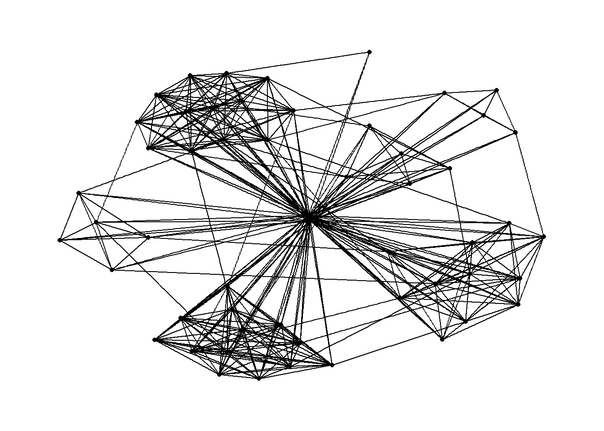
layout = "fr" selects the Fruchterman–Reingold force-directed layout.
Colour nodes by Department:
g <- ggraph(GAStech_graph,
layout = "nicely") +
geom_edge_link(aes()) +
geom_node_point(aes(colour = Department,
size = 3))
g + theme_graph()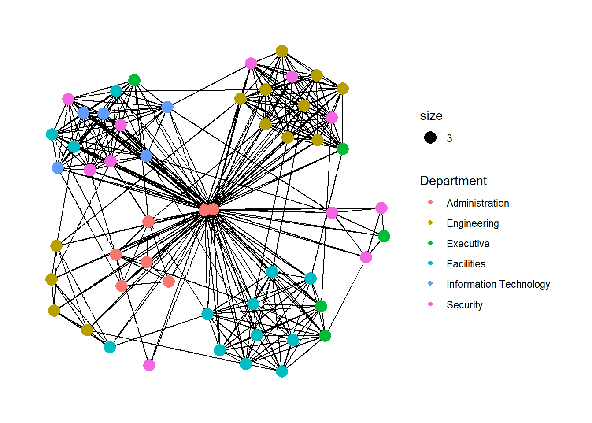
geom_node_point() is the network analogue of geom_point() — supports colour, size, shape aesthetics just like ggplot2.
Map edge thickness to Weight:
g <- ggraph(GAStech_graph,
layout = "nicely") +
geom_edge_link(aes(width = Weight),
alpha = 0.2) +
scale_edge_width(range = c(0.1, 5)) +
geom_node_point(aes(colour = Department),
size = 3)
g + theme_graph()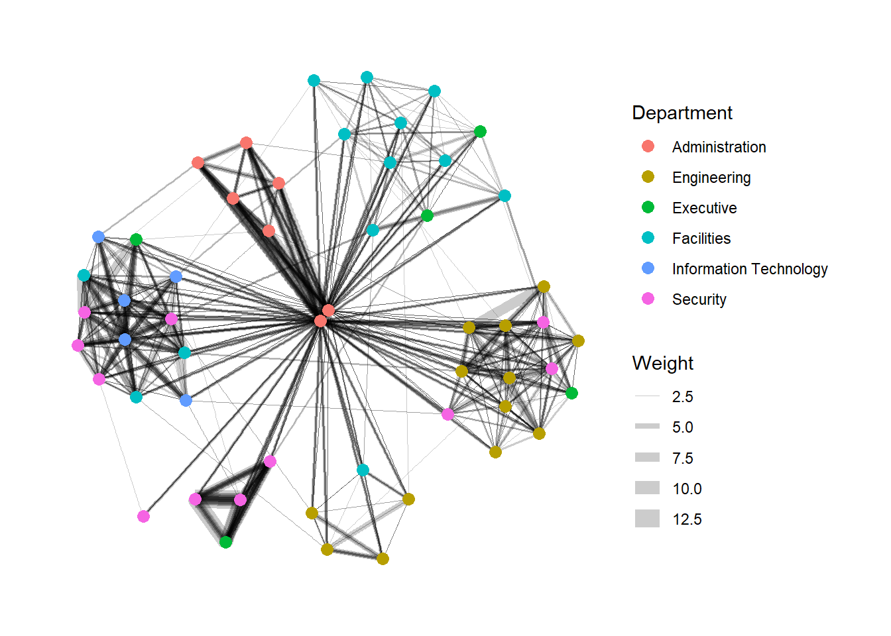
width maps line thickness proportionally to Weight; alpha adds transparency to reduce over-plotting.
Faceting spreads nodes/edges across panels by attribute value, reducing edge over-plotting. Three ggraph faceting functions:
facet_nodes() - an edge is drawn in a panel only if both its terminal nodes are present in that panel.facet_edges() - nodes are drawn in every panel, regardless of the faceting variable.facet_graph() - facet on two variables simultaneously.facet_edges()set_graph_style()
g <- ggraph(GAStech_graph,
layout = "nicely") +
geom_edge_link(aes(width = Weight),
alpha = 0.2) +
scale_edge_width(range = c(0.1, 5)) +
geom_node_point(aes(colour = Department),
size = 2)
g + facet_edges(~Weekday)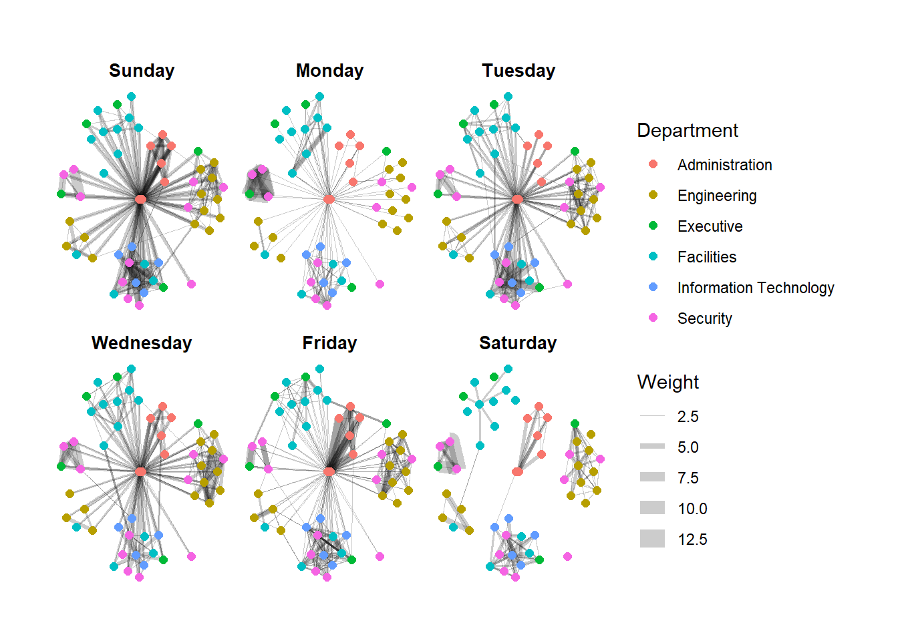
set_graph_style()
g <- ggraph(GAStech_graph,
layout = "nicely") +
geom_edge_link(aes(width = Weight),
alpha = 0.2) +
scale_edge_width(range = c(0.1, 5)) +
geom_node_point(aes(colour = Department),
size = 2) +
theme(legend.position = 'bottom')
g + facet_edges(~Weekday)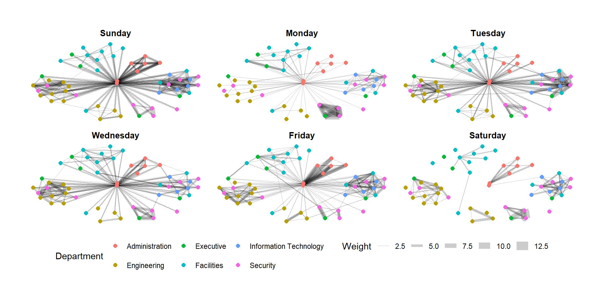
set_graph_style()
g <- ggraph(GAStech_graph,
layout = "nicely") +
geom_edge_link(aes(width = Weight),
alpha = 0.2) +
scale_edge_width(range = c(0.1, 5)) +
geom_node_point(aes(colour = Department),
size = 2)
g + facet_edges(~Weekday) +
th_foreground(foreground = "grey80",
border = TRUE) +
theme(legend.position = 'bottom')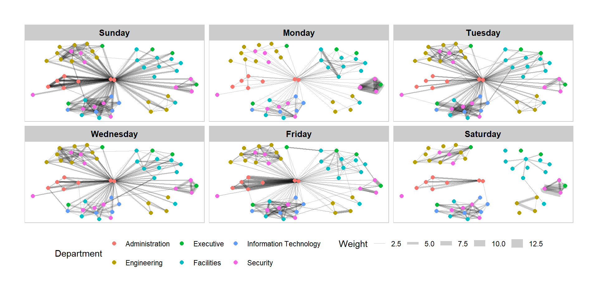
facet_nodes()set_graph_style()
g <- ggraph(GAStech_graph,
layout = "nicely") +
geom_edge_link(aes(width = Weight),
alpha = 0.2) +
scale_edge_width(range = c(0.1, 5)) +
geom_node_point(aes(colour = Department),
size = 2)
g + facet_nodes(~Department) +
th_foreground(foreground = "grey80",
border = TRUE) +
theme(legend.position = 'bottom')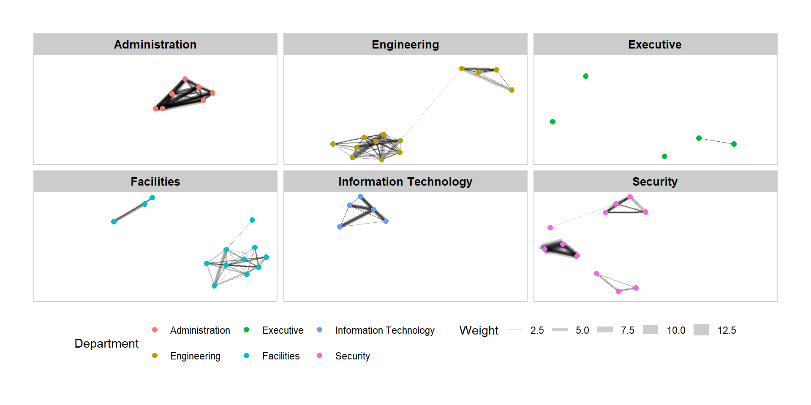
Centrality measures describe how “important” an actor is within a network. Four classic measures: degree, betweenness, closeness, eigenvector.
For the underlying theory/maths, see Chapter 7: Actor Prominence in A User’s Guide to Network Analysis in R.
g <- GAStech_graph %>%
mutate(betweenness_centrality = centrality_betweenness()) %>%
ggraph(layout = "fr") +
geom_edge_link(aes(width = Weight),
alpha = 0.2) +
scale_edge_width(range = c(0.1, 5)) +
geom_node_point(aes(colour = Department,
size = betweenness_centrality))
g + theme_graph()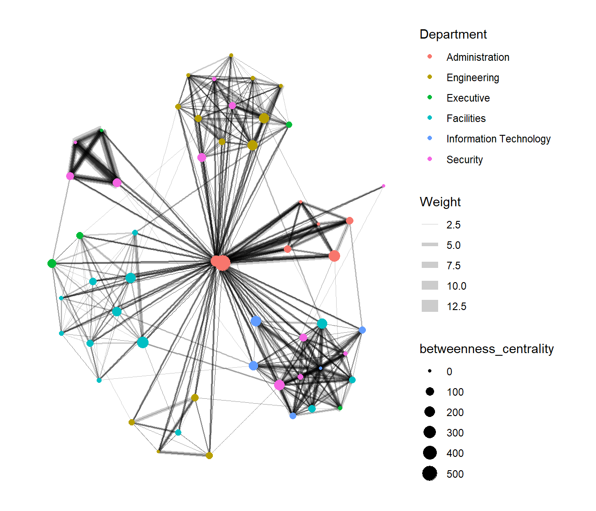
mutate() (dplyr) + centrality_betweenness() (tidygraph) computes and stores betweenness centrality as a new node attribute.
From ggraph v2.0 onward, tidygraph algorithms (like centrality functions) can be called directly inside a ggraph aes() mapping, no need to precompute and store them first:
g <- GAStech_graph %>%
ggraph(layout = "fr") +
geom_edge_link(aes(width = Weight),
alpha = 0.2) +
scale_edge_width(range = c(0.1, 5)) +
geom_node_point(aes(colour = Department,
size = centrality_betweenness()))
g + theme_graph()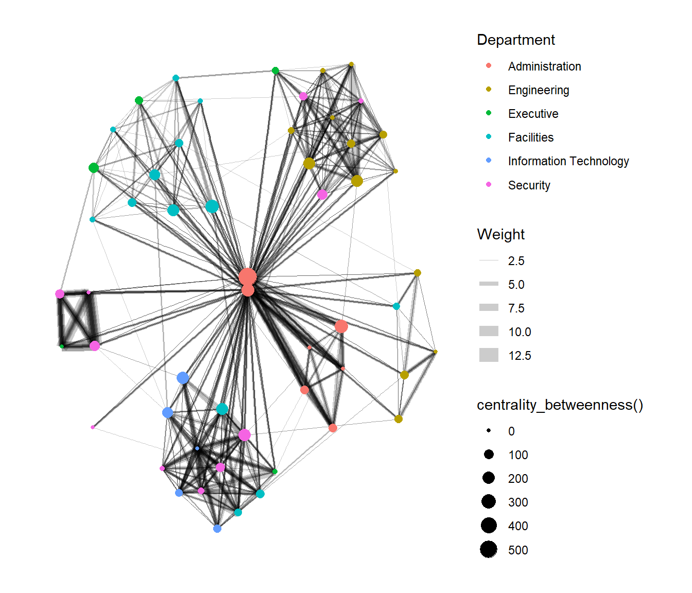
tidygraph exposes many igraph community-detection algorithms:
group_edge_betweenness()group_leading_eigen()group_fast_greedy()group_louvain()group_walktrap()group_label_prop()group_infomap()group_spinglass()group_optimal()Some account for edge direction/weight, some don’t — see the tidygraph community reference.
g <- GAStech_graph %>%
mutate(community = as.factor(
group_edge_betweenness(
weights = Weight,
directed = TRUE))) %>%
ggraph(layout = "fr") +
geom_edge_link(
aes(width = Weight),
alpha = 0.2) +
scale_edge_width(
range = c(0.1, 5)) +
geom_node_point(
aes(colour = community))
g + theme_graph()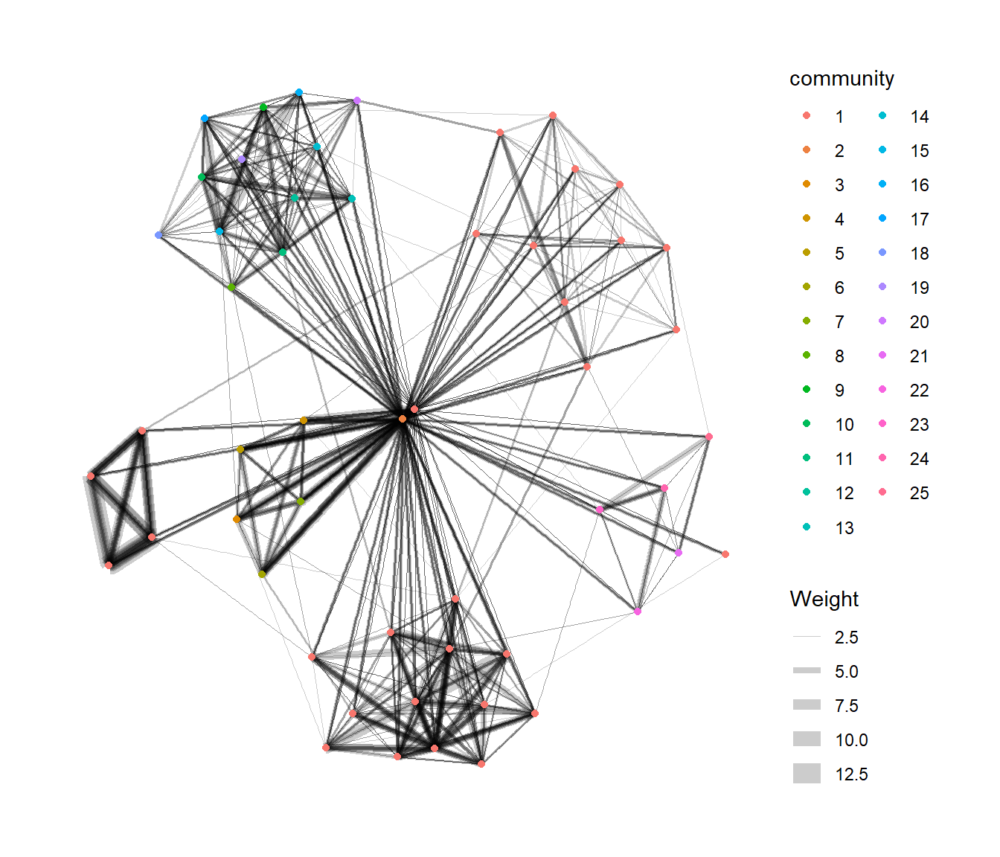
Uses geom_mark_hull() from ggforce (requires ggforce + concaveman) to visually enclose each detected community:
g <- GAStech_graph %>%
activate(nodes) %>%
mutate(community = as.factor(
group_optimal(weights = Weight)),
betweenness_measure = centrality_betweenness()) %>%
ggraph(layout = "fr") +
geom_mark_hull(
aes(x, y,
group = community,
fill = community),
alpha = 0.2,
expand = unit(0.3, "cm"), # how far the hull extends beyond points
radius = unit(0.3, "cm") # corner smoothness
) +
geom_edge_link(aes(width = Weight),
alpha = 0.2) +
scale_edge_width(range = c(0.1, 5)) +
geom_node_point(aes(fill = Department,
size = betweenness_measure),
color = "black",
shape = 21)
g + theme_graph()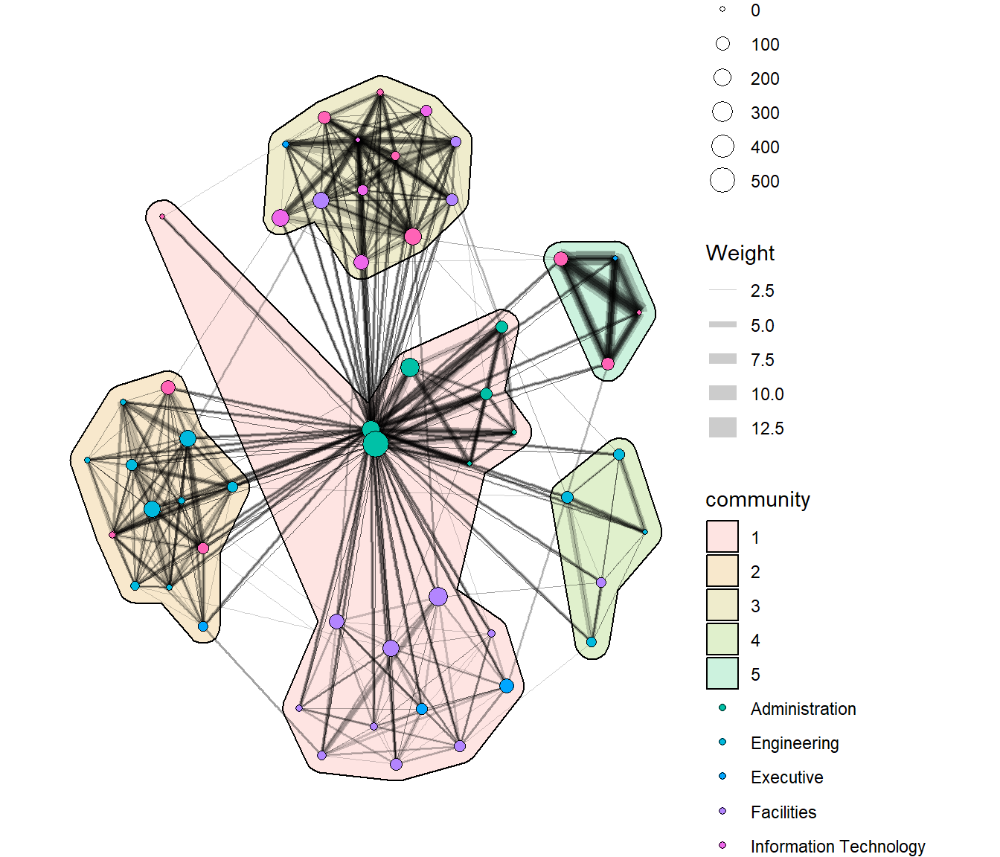
visNetworkvisNetwork wraps the vis.js JavaScript library for interactive network visualisation.
Key requirements:
id column.from and to columns.label column.GAStech_edges_aggregated <- GAStech_edges %>%
left_join(GAStech_nodes, by = c("sourceLabel" = "label")) %>%
rename(from = id) %>%
left_join(GAStech_nodes, by = c("targetLabel" = "label")) %>%
rename(to = id) %>%
filter(MainSubject == "Work related") %>%
group_by(from, to) %>%
summarise(weight = n()) %>%
filter(from != to) %>%
filter(weight > 1) %>%
ungroup()visNetwork(GAStech_nodes,
GAStech_edges_aggregated)visNetwork(GAStech_nodes,
GAStech_edges_aggregated) %>%
visIgraphLayout(layout = "layout_with_fr")See visIgraphLayout docs for available layout options.
visNetwork() colours nodes by a field named group, so rename Department to group:
GAStech_nodes <- GAStech_nodes %>%
rename(group = Department)visNetwork(GAStech_nodes,
GAStech_edges_aggregated) %>%
visIgraphLayout(layout = "layout_with_fr") %>%
visLegend() %>%
visLayout(randomSeed = 123)visEdges() controls edge appearance:
arrows — where to place arrowheads (e.g. "to")smooth — draw edges as smooth/curved linesvisNetwork(GAStech_nodes,
GAStech_edges_aggregated) %>%
visIgraphLayout(layout = "layout_with_fr") %>%
visEdges(arrows = "to",
smooth = list(enabled = TRUE,
type = "curvedCW")) %>%
visLegend() %>%
visLayout(randomSeed = 123)See visEdges options for more.
visOptions() adds interactive behaviours:
highlightNearest = TRUE — highlight a node’s neighbours on clicknodesIdSelection = TRUE — adds an HTML dropdown to jump to a node by idvisNetwork(GAStech_nodes,
GAStech_edges_aggregated) %>%
visIgraphLayout(layout = "layout_with_fr") %>%
visOptions(highlightNearest = TRUE,
nodesIdSelection = TRUE) %>%
visLegend() %>%
visLayout(randomSeed = 123)See visOptions for the full argument list.
tidygraph::tbl_graph() binds them into one object.activate() decides which table (nodes/edges) your dplyr verbs act on — a very easy thing to forget mid-pipeline.aes()/geom logic, with network-specific geoms (geom_node_point(), geom_edge_link()) and layouts (fr, kk, nicely, etc.).facet_edges(), facet_nodes()) is a powerful way to reduce over-plotting by splitting the network across a categorical or temporal variable.ggraph() call (v2.0+) — no separate mutate() step required.Course site: R for Visual Analytics — Chapter 27